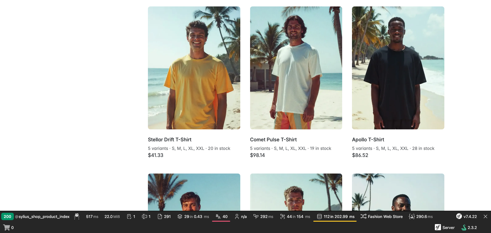
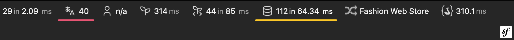
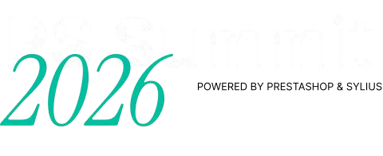

the reflex: let's describe the project in CLAUDE.md
every session pays for all of it
in our case: ~2,000 lines of instructions
the code compiles, but breaks conventions
Guessing is not a bug in the model. It is what the model does when it has no fact.
Diagnosis
Instructions don't scale
Instructions
sit in the context just in case, every session pays for all of it
describe the project "as it was", not "as it is"
the model still has to infer the state: which plugin, which hook
non-deterministic, nothing to fix
A fact from a tool
arrives at the moment of need, not just in case
measured from the runtime, "as it is"
compact, structured
deterministic, you fix the tool
Guess in → guess out.
Example · the same in both runs
Clean Sylius, one customization
Sylius Standard 2.2, default fixtures. Product list T-shirts › Men: 9 products × 5 variants
Ticket: under the product name show "5 variants · S, M, L, XL, XXL · 28 in stock"
Done the Sylius way: twig hook + template, zero PHP. The template iterates over the variants and their options
Result: 45× the same SELECT on one page, 111 queries in total


Profiler toolbar: 111 queries, in yellow. The profiler itself sees it. The question is whether the agent will ask it.
Demo · run 1 · bare agent, no Mate
recording ×5
Demo · run 1 · result
It gets there. Eventually.
What we saw
starts with what changed recently in the project, then reads templates and entities
it knows the profiler exists, and gets at it by hand
several turns of grinding before it sees the queries
What it means
the knowledge is there, the path is missing
in a small project it will hit, in a big one the same method costs more
Without a tool it gets there. The question: at what cost?
Where the 5 minutes came from · Dave Liddament's pyramid
What the model doesn't know, it guesses
humanmachine
The answer lived at the bottom. Profiler, container, logs: things that don't guess, they know. The agent spent 5 minutes one floor up, inferring from code.
The bottom is enforced by code. The middle by the model. The top by a human.
Everything above works only because the base is solid.
Symfony AI Mate
What Symfony Mate is
A developer MCP server*
for PHP and Symfony applications; dev dependency, a symfony/ai component
Its own container next to the app
Mate doesn't plug into the kernel: its own DI container, tools and skills discovered from Composer
Extensible
your own tools and skills right in the project; to share between projects: extension = a regular Composer package
With any agent
Claude Code, Codex, Cursor, Copilot, JetBrains AI
Platform · Agent · Store → your application uses AI Mate → AI uses your application
the agent doesn't have to read code to know where the problem is
the profiler always knows, guessing never does
What you just saw
The knowledge was in both. The path in one.
In both cases the agent gets there.A matter of time and tokens.
In both it went to the profiler, like a developer.Bare: several turns of grinding, ~5 minutes to N+1. With Mate: 1:20, and the first line is "I'll check this page with the Symfony profiler via Mate".
The agent is not smarter. Different environment.Same model, same prompt, same project.
How to extend it
Your own tool, your own skill
1 · Tool = a method with an attribute
// mate/src/FeatureFlags.php
final class FeatureFlags
{
#[MateTool(
name: 'app_feature_flags',
description: 'Flags and their state in this env',
)]
public function __invoke(string $env = 'dev'): array
{
return Yaml::parseFile("config/flags/$env.yaml");
}
}
mate/src is already a scan dir after init. Parameter types = the tool's schema. mate discover and the agent sees it.
2 · Skill = a directory with SKILL.md
// mate/skills/app-flags/SKILL.md
---
name: app-flags
description: Use when a task touches
feature flags. Call app_feature_flags
first, never read config by hand.
---
- Flags: config/flags/<env>.yaml
- Ask the tool, do not guess names
extra.ai-mate.skills: ["mate/skills"] in composer.json. The skill says when, the tool says how it is.
Does the tool work in other projects too? Make it a Mate extension.a regular Composer package with extra.ai-mate · start: github.com/MatesOfMate/extension-template
Synergy
Skills + tools > each on its own
Skills only
Instructions bloat
The model keeps guessing. Our era 2.
slide 3
Tools only
A binary in vendor
The agent doesn't know it has something to ask with.
Mate Lab: binary alone 0/10 and 0/10
Together
When + how it is
The skill says when and why. The tool says how it is.
Mate Lab: binary + files 10/10 and 5/10
You saw it a moment ago: profiler skill + profiler tool.
That's why Mate has distributed skills natively since 0.12, and we version the skill with the tools in one package.
Our case · sylius/sylius-mate-extension
Our domain: 29 tools for Sylius
The agent asks the booted kernel of this project, it doesn't guess.
sylius_project_profile namespace, locale, channel, mailerinstead of reading composer.json, .env and configs
sylius_installed_plugins plugins, decorators, entitiesinstead of guessing whether stock lives in MSI
sylius_twig_function_verify whether sylius_* exists and with what signatureinstead of the made-up Twig helper from slide 3
sylius_routes_show / sylius_route_inspect routes, duplicated prefixesinstead of path() to a route that doesn't exist
sylius_hooks_find_for_template the hook a template sits ininstead of grepping through templates
Six skills, one entry point.sylius-dev gives the mental model and the "Mate first" protocol, the rest by domain: resource, frontend, events, mailer, verify
When which tool. Instead of describing the project, the skill says how to ask it: profile → plugins and decorators → hooks, before the first file is created
55 refuse-rules instead of an essay. DI, mailer and hook traps as rules in a separate file, on demand. SKILL.md itself is 30–90 lines
Definition of DONE.sylius-verify: verify pass, cache, Playwright gate
$ ls .agents/skills/
mate-php-environment-checkmate-sylius-devmate-sylius-eventsmate-sylius-frontendmate-sylius-mailermate-sylius-resourcemate-sylius-verifymate-symfony-profiler-debuggingmate-symfony-request-triagemate-symfony-service-inspectionmate-system-information
Your project
Harness engineering + context engineering > model
Start with
one tool that replaces the most frequent guess
one skill that says when to use it
measuring whether the agent uses it. Don't assume
Two disciplines
context: what gets into the context and when
harness: what the environment enforces instead of the model
The model is replaceable. The environment is what matters.
* Speaking of MCP
Why Mate removed the MCP server
Visibility decides, not transport.Mate Lab: MCP 3/10, bare CLI 0/10, CLI + files 10/10.
MCP was only a transport.Tools, schemas, runtime, skills, discovery: none of it needed it.
Nobody reads skills via MCP.Claude Code, Codex, Copilot: all from files. The file layer had to exist anyway.
CLI + files are cheaper.No process, no handshake, no generated config.
"Kill the transport, not the capability." Johannes Wachter · The hardest code to delete
What Mate gives you in your project · not necessarily Symfony
Summary
Any PHP application
the core doesn't know the framework, Symfony is one of the bridges. Legacy too
The whole team gets the same
composer install gives every dev and every agent the same tools and skills: Claude Code, Codex, Copilot, Cursor
Zero interference with the app
dev dependency with its own container. Nothing in the kernel, nothing in production
One source of truth
tools and instructions in vendor, versioned with the code. Not in a CLAUDE.md per person
Works when the app doesn't boot
container from the dump, profiler and logs from disk. Answers when you need it most
Your own tool and skill without an extension
tool = a method with #[MateTool] in mate/src, skill = a directory in mate/skills
Ecosystem · Mate extensions
Community
Official · symfony/ai
Symfony · Monolog
the Symfony bridge (container, profiler) and Monolog (logs). The profiler in recording 2 is exactly the Symfony bridge.
MatesOfMate
PHPStan · PHPUnit · Composer · Rector
plus self-review, the extension template and the awesome-mate list.
Frameworks and products
Sylius · Sulu · OroCommerce
the same pattern: a Composer package with tools and skills over its own domain.
The list: github.com/MatesOfMate/awesome-mate Start your own: github.com/MatesOfMate/extension-template
Bonus · if there are a few minutes left
What if we took a weaker model?
model
environment
to "it's N+1"
1
Fable 5.1
without Mate
~5 min
2
Fable 5.1
with Mate
1:20
3
Haiku 4.5
with Mate
1:20
How much do you pay for the model, and how much for the environment?same prompt, same project, one run each · ▶ recording 3: Haiku + Mate (1:23)
✕ close (Esc)

Thank
you
Slides, links, commands from the demogithub.com/mpysiak/phpers-bydgoszcz-2026